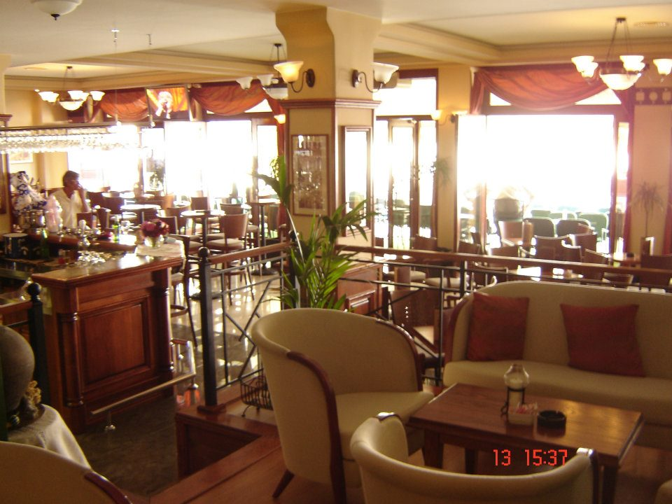
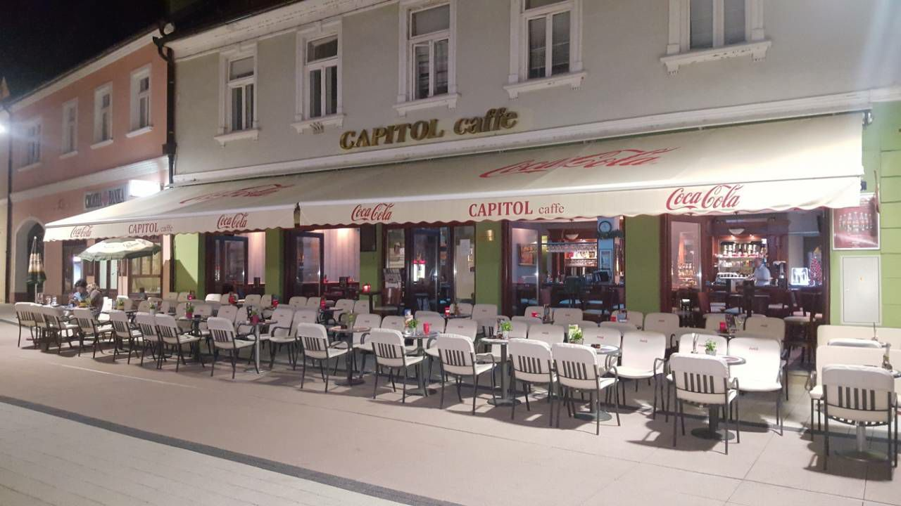
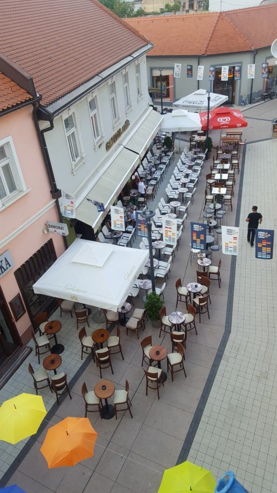
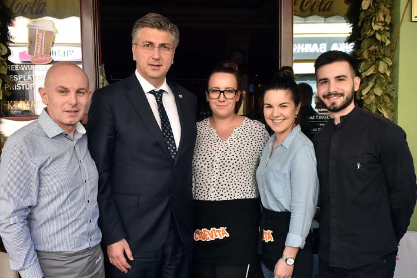
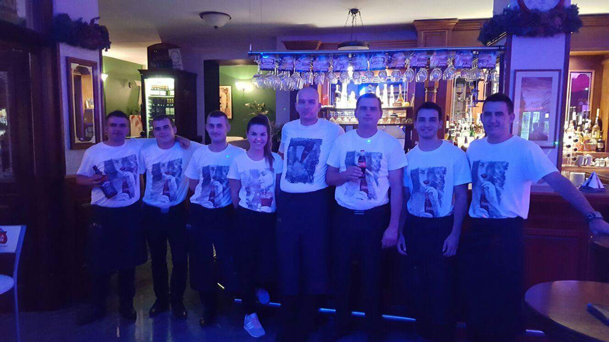

Caffe Bar Capitol otvoren je 13.08.2004. Nalazi se u samom centru grada. Capitol je toplo i ugodno mjesto za popiti vrhunsku kavu, ili za opustiti se vikendom navečer sa društvom uz zvuke žive glazbe. Vlasnik Capitola je Željko Ivanković.
Kafić se sastoji od glavnog prostora sa dva šanka, odijeljenog pušačkog prostora, te galerije koja je zamišljena tako da gostu pruži dojam kao da je kod kuće u svom dnevnom boravku.
Duž cijelog kafića se nalazi terasa koja sadržava 90 sjedećih mjesta. Na terasi je moguće sjediti i tokom zime i hladnijeg vremena jer su iznad terase ugrađene plinske grijalice.
Terasa za vrijeme Aurea Festa
Vlasnik Željko Ivanković sa osobljem u društvu Andreja Plenkovića
Širi kadar osoblja Caffe Bara Capitol